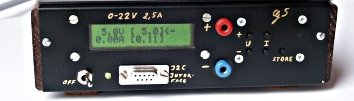
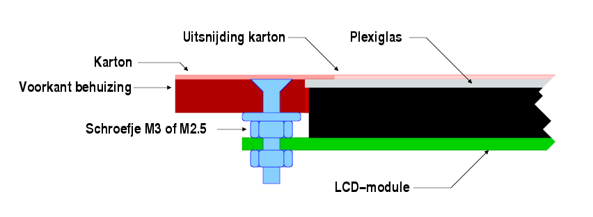
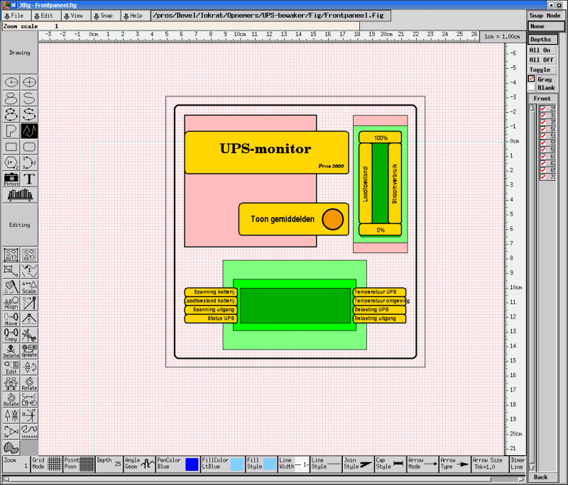
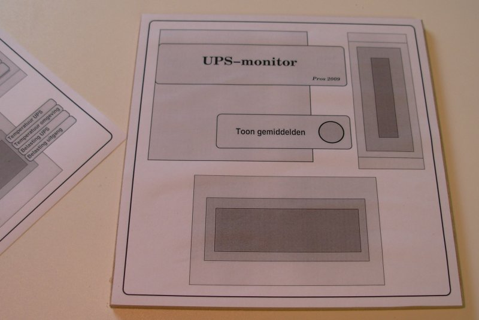
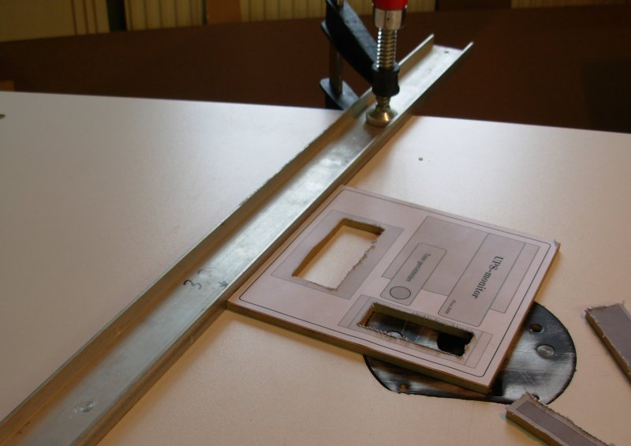
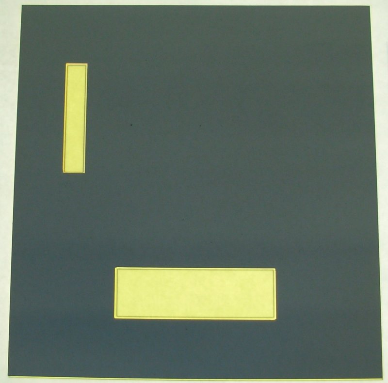
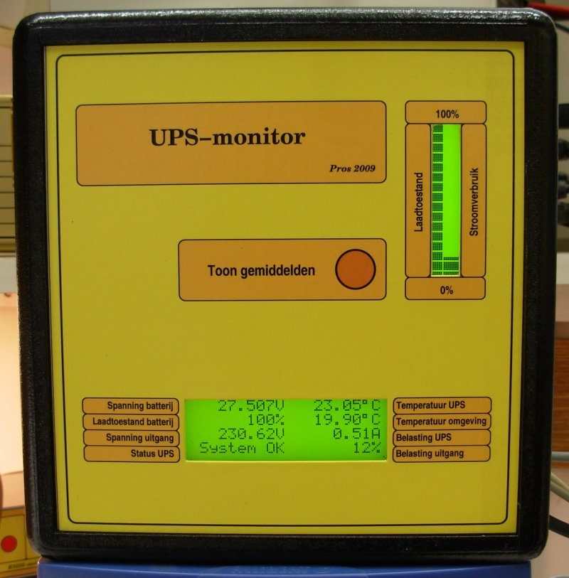
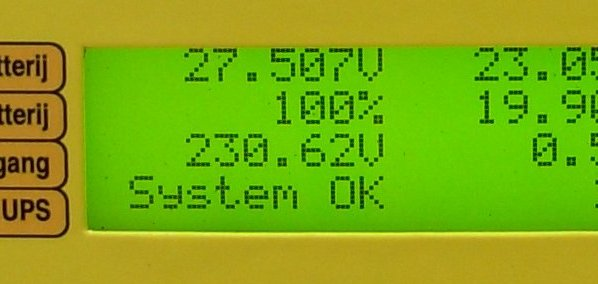
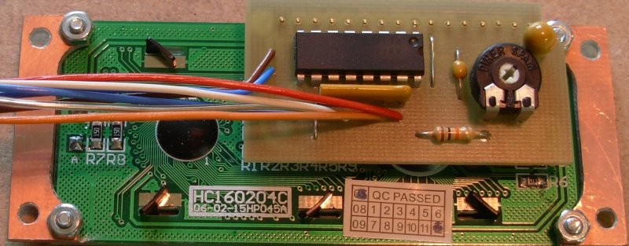

Vorige: Allerlei.
Omhoog: Allerlei.
Volgende: NTC-gevoeligheid opdrijven.
Inhoudsopgave
Index
FrontPanelen.
Wie zich aan elektronica waagt, ziet zich genoodzaakt zijn
schepping ergens onder te brengen. Vaak vormt dat geen probleem,
omdat de schakeling gedoemd is een verborgen leven te lijden.
Soms in een hoekje van een bestaande behuizing ― als
gastarbeider, zeg maar. Of weggestopt onder het dashboard van
een wagen. Of ...
Droevig is hun lot.
Maar niet minder droevig is het lot van een mooie schakeling,
die de rest van haar leven moet doorbrengen in een verknoeide
behuizing. Vaak is de aanschafprijs van de behuizing
hoger dan die van de schakeling. Dat is op zich geen ramp, maar
als er lukraak gaten geboord, geslepen of gevijld worden ten
behoeve van toetsen, connectors en displays, is het
eindresultaat allesbehalve in staat om enige indruk te maken op
de toeschouwer als dat niet netjes wordt uitgevoerd.

Kijk hiernaar. Achter dit lelijk front
verschuilt zich een prima schakeling.
Het kan beter. Het kan veel beter!
Soms met vallen en opstaan, zoals dit relaas aantoont. Maar ook zonder freesmachine en
kolomboor kan veel bereikt worden. Laten we beginnen met ...
Karton.
Het bovenstaande frontpaneel kan ook uitgevoerd worden door
schroeven met een verzonken kop te gebruiken. Het resultaat
wordt er weliswaar niet mooier op.
Maar nu kunnen we die verzonken schroefkoppen tenminste
bedekken1. Daarnaast kunnen we ―als de frontplaat dikker is
dan 1 à 2mm― ook de opening voor het display
groter maken, zodat dit verder naar voor komt en beter af te
lezen is.
Dan bekomen we iets als dit:

Op die manier kunnen we veel wegmoffelen. Kijk naar de
LCD-module: de opening in het frontpaneel hoeft geen toonbeeld
van materiaalbewerking te zijn. Zowel die opening als de rand
van de LCD-module worden voor het oog verborgen door een stukje
karton, dat heel wat eenvoudiger te bewerken is ― een scherp
mes, een rechte lat en een beetje talent volstaan om een
perfecte rechthoek uit te snijden.
Waarom karton?
Het kan ook met andere materialen dan karton. Ik denk dan aan
dun aluminium, plexiglas, of al wat voorhanden is en zich
gemakkelijk laat bewerken.
Karton heeft wel het voordeel dat het spotgoedkoop is. En
stevig? Niet echt. Maar tenslotte heeft het geen dragende
functie, het hoeft enkel wat schroefkoppen en gaten te bedekken.
En het karton wordt op zijn beurt liefdevol verborgen door een
mooie afdruk, als het kan in kleur, en liefst op fotopapier.
Hoe beginnen we er aan?
Om te beginnen moet de layout voor de frontplaat ontworpen
worden. Dat kan met software die speciaal daarvoor ontworpen is.
Het kan evenwel met elk vector-georienteerd tekenprogramma.
Zelf geef ik de voorkeur aan
xfig
, maar er bestaan
wel meer programma's die voor het doel geschikt zijn. Het
belangrijkste is, dat een rechthoek van 50mm x 100mm ook
werkelijk met die afmetingen uit de printer rolt.
Hier xfig aan het werk bij het ontwerpen van de layout uit het
voorbeeld:

Naast de afdruk die daadwerkelijk op de frontplaat moet komen te
staan, is van elk onderdeel de omtrek opgenomen. Dat werkt
handiger bij het positioneren.
In het voorbeeld hierboven is de
omtrek van de LCD-modules voorgesteld als een lichtgroene
rechthoek, terwijl het display-venster donkergroen gekleurd is.
Daar tussenin zit de metalen rand van het display. De opening in
de frontplaat moet groot genoeg zijn om ook die rand door te
laten, maar we willen hem natuurlijk niet in het eindresultaat
zien.
De rose rechthoek vertegenwoordigt de printplaat die later aan
de binnenkant een plaatsje vindt. Wat de twee rose rechthoekjes
zijn, boven en onder het vertikaal display, kan je
hier zien.
Voor de finale afdruk ―waarbij ook de achtergrond ingekleurd
wordt― worden alle overtollige lijnen uiteraard verwijderd.
Anderzijds kunnen we voor het zagen/boren/frezen een afdruk
maken waarop enkel de relevante lijnen en punten terug te vinden
zijn. Die kleven we dan tijdelijk op het te bewerken paneel ―
met Pritt2, bijvoorbeeld.
Dat levert dan zoiets op:

Boren, frezen, zagen.
In dit voorbeeld hoeven er maar 2 rechthoeken en 1 gat in het
front van de behuizing (MDF 6mm) aangebracht te worden. Na korte
tijd ziet het er dan zo uit:

De openingen mogen gerust een beetje groter zijn dan nodig. In het
eindresultaat valt daar niets van te merken.
Zo kan ook iemand, die slechts over een figuurzaag of een wipzaag
beschikt, zonder moeite een behoorlijk resultaat bereiken.
Op gelijkaardige wijze wordt een stuk karton onder handen
genomen. Niet met een frees, uiteraard, maar met een
Stanley-mesje.
Neem het karton wat groter dan nodig, zodat de afdruk aan de
randen vastgekleefd kan worden. De openingen moeten nu heel
precies zijn; net groot genoeg om het LCD komfortabel af te
kunnen lezen.
Kleven.
Daarna kan het frontvel op het karton gekleefd worden.
Door hulplijnen aan te brengen binnen de openingen is het
―mete behulp van een lichtbak― vrij eenvoudig dit goed te
positioneren. Die hulplijnen verdwijnen later toch uit het
zicht.

Ik geef er de voorkeur aan, het frontvel eerst van enkele lagen
transparante lak te voorzien. Zo is het beter bestand tegen vuil
en beschadiging.
Het vocht in de lijm zal proberen het karton wat krom te
trekken. Het is dus belangrijk, karton en frontvel stevig tussen
2 vlakke platen te klemmen, en zo te laten drogen.
Eens dit gebeurd is, kan het frontvel aan de randen en binnen de
openingen ingesneden worden. Het frontvel wordt dan naar binnen
geplooid en zo vastgekleefd. Waarna weer een droogtijd tussen
twee platen volgt.
De laatste stap bestaat er in, karton plus frontvel op de
uitgefreesde frontplaat te kleven. Teneinde de LCD's te
beschermen, plaats ik er een stukje doorzichtig plexiglas oid.
voor - CD-doosjes lenen zich daat prima voor.
Het eindresultaat ziet er dan zo uit:

Een detail-opname:

De rode drukknop.
Nog een woordje over de drukknop die in het midden te zien is.
Deze is uitgevoerd als volgt:
 Met dit verschil dat de polyester-folie hier plaats heeft
geruimd voor het karton. Dat maakt de toets minder gevoelig,
zodat er iets harder gedrukt moet worden.
Met dit verschil dat de polyester-folie hier plaats heeft
geruimd voor het karton. Dat maakt de toets minder gevoelig,
zodat er iets harder gedrukt moet worden.
Een betere oplossing zou er in bestaan, ook in het karton ronde
openingen aan te brengen, daarover polyester-folie te kleven, en
dit te bekleden met de toplaag - het bedrukte fotopapier.
Krenterige Aziaten.
LCD-modules zijn heden-ten-dage spotgoedkoop. De producent wil
uiteraard zijn winst veilig stellen door te beknibbelen op alles
en nog wat. Dat levert dan een product op met bevestigingsgaten
van 2.5mm, die zo dicht bij de metalen LCD-omhulling liggen, dat
je d'r niets mee kan aanvangen.
Edoch, met een paar restjes printplaat valt daar een mouw aan te
passen:

Het geheel wordt hierdoor wel iets groter, maar nu kunnen we
tenminste M3-boutjes gebruiken voor de bevestiging.
Oh, ja, dat gekke printje bovenop is een 3-draads LCD-interface. Dat scheelt weeral 3 I/O-pinnen
voor de microcontroller.
Voetnoot
- ...bedekken
1
-
“wegmoffelen” zoals een rechtgeaarde Sinjoor zou zeggen
- ...Pritt
2
-
wacht niet tot de lijm droog is, maar ga na het kleven onmiddelijk aan de slag. Wie snel werkt heeft het voordeel dat de layout en de lijm nog gemakkelijk te verwijderen is. Het hoeft uiteraard geen Pritt te zijn, zolang het maar oppervlakkig kleeft. Sluip naar de badkamer, en leen daar even de haarlak van vrouwlief/moeder/zuster.
Vorige: Allerlei.
Omhoog: Allerlei.
Volgende: NTC-gevoeligheid opdrijven.
Inhoudsopgave
Index
Pros Robaer - 2012